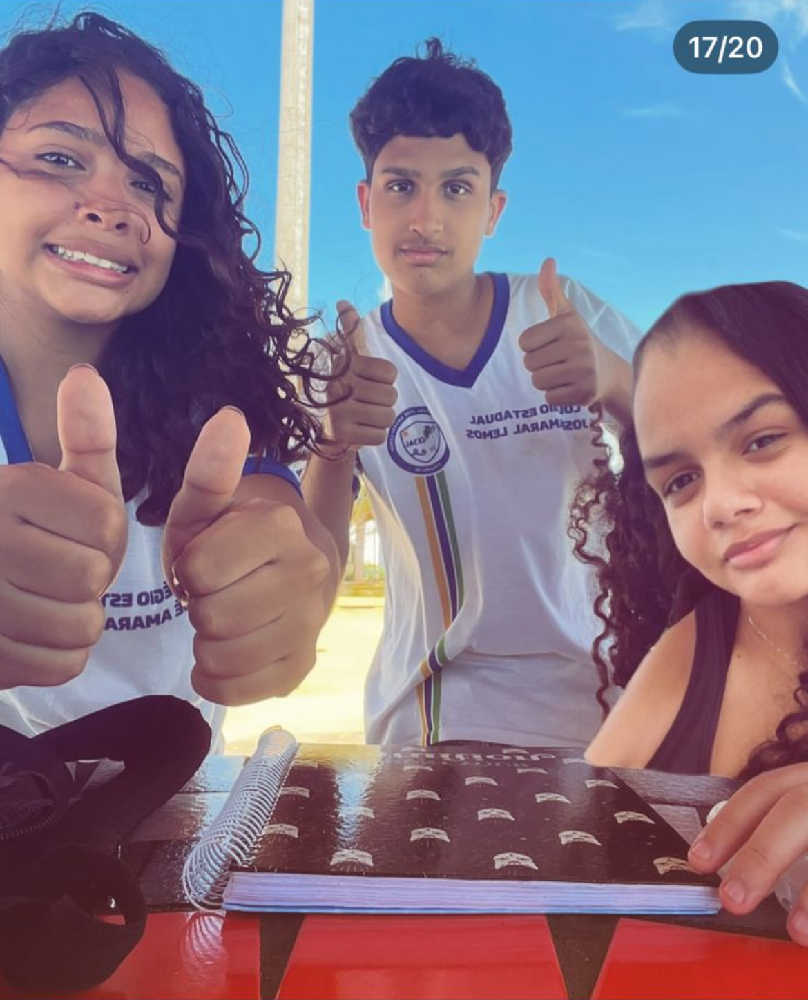
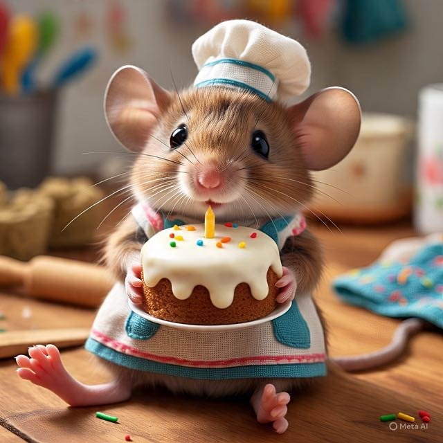

💔 ME FERE MIM RISCA DE AMOR… 💔
🎹 O ANIVERSÁRIO DA CAPIROTA 🎤
Três dias de RESENHA, cuscuz e Coca-Cola. Se prepare pro fricassê da saudade.
👉 ENTRA, MON AMOUR (clica sem medo de sofrer)📆 PROGRAMAÇÃO
20 DE JUNHO — TPD ON BITCH
🏖️ Praia • 🍧 Açaí com o Trio Parada Dura (Rito, Rita & Capis)
21 DE JUNHO — O GRANDE DIA DA CAPIROTA/RESENHA COM OS AMIGO LORO
🏖️ Praia com o povo todo
🍔 Hambúrguer no Suculentos (nao , meury.. vai explodi)
22 DE JUNHO — O ALMOÇO DO REENCONTRO
🍽️ Fricassê + macarrão + arroz + strogonoff + brigadeiro
⛪ Encerramento espiritual (porque a gente peca, mas reza)
🍗 O MENU BREGA
- 🔥 FRICASSÊ DO RITO — prefira passar fome a come isso kkk
- 🍫 BRIGADEIRO DA RITA — Pra adoçar o lanho e solta as bostas
- 🍝 MACARRÃO DOS QUINTO Capis, Zucka e Nelsinha) — Receita duvidosa! (dó de quem come)
- 🍚 ARROZ DA JAQUE — Porque sem arroz, nada é de verdade
- 🥩 STROGONOFF DA MARINA (?) — A confirmar, mas a esperança é a última que morre
- 🥤 Cocas de 2L — OBRIGATORIO 2L POR PARTICPANTE.
📸 OS GATOS GAROTXS
 
"TPD, mais forte que qualquer casal do Ratinho"
💌 RECADOS DE AMOR
✍️ "Capis, parabéns gata!! mais er aniversario de zucka ou tourada? quanto boi."
✍️ “Rita bbr arrasou brigadeiro sou eu jaque kk.”
✍️ “Vai come da Se N da da nada.”